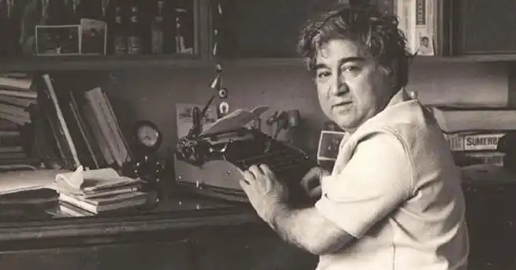

Азіз Несін (тур. Aziz Nesin, один із псевдонімів Мехмета Нусрета) (1915—1995) — відомий турецький письменник, драматург та публіцист.
Азіз Несін родився 20 декабря 1920 року в Хейбеліаде, один із Принцевих островів, про який сам Несін говорив, що це — "райський уголок, де не положено жити таким, як я. Ета літня резиденція найбільш впливових турецьких толстосумів стала моей родиною. Сильні мири не можуть обоїтись без бедняків, вони дуже потребують у своїх домашніх руках. Вдома і в будинку на Хейбеліаді ". У 1934 році в Турції вищий закон, який управляє титулом і старою формою образи, і майбутній письменник взяв себе за фамілію "Несін", відзначивши "Що ти маєш?". "Я сподіваюся, — поясняє він, — що, коли люди будуть обробляти ко думки по фамілії, я буду задумуватися над тем, що я і хто я". Позже, в пошуку очевидних псевдонімів, було вибрано імя відца — Азіз. Хотя помимо цього, основного псевдоніма, у Мехмет Нусрета було більше п'ятидесяти псевдонімів [1]. Це частково обширює острим соціально-політичного характеру його сатиричних виробництв.
У 1939 році він закінчив військово-технічне училище, отримавши спеціальну саперу та чин молодшого офіцера. Слухайте його протекалом, зачавшись у Фракії, забуваючий у восточній країні, в районі Карса, і перед ходом увільнюється в 1944 році в столиці — Анкаре, немало обогатів уже почав писати Несіна живим матеріалом, який впослідував слухачів основної кількості своїх художніх виробників. У 1937—1939 рр. слухав лекції в Академії ізящних іскусств. З 1943 року починається журналістська діяльність Азіза Несіна в газетах "Еді Гюн", "Тан" та багаточисельних періодичних видань. Велике вплив на формування Несіна в ідейному і естетичному планах виявило своє знання з Сабахаттином Алі і співробітництво в Європейському "Марко Паша", який освячував важливіші стосунки міжнародної і внутрішньополітичної життєдіяльності, іронизував за своєю дією найсучаснішу партію, вищою є всесвітній потенціал крестьян и городских тружеников. У 1957 році Азіз Несін співпадає з письменником Кемалем Тахіром засновує видавництво "Дюшон", в якому побачили світ книг багатьох турецьких авторів. Іздательська практика Азіза Нісіна нікогда не визначала лічних інтересів. Она завжди погоджується з загальною потребою, що громадянське чудо письменника знайшло з удівітельною проніцательностью. Іменно сознание загальнодоступної необхідності дало жизнь "Літературному ежегоднику фонда Азіза Несіна". Ежегодник об'ємніше всього в тисячах сторінок вийшов з 1976 року на продовження десяти років, до того часу, покажіть, що Азіз Несін не займається активною громадсько-політичною службовістю. Ежегодник включав у себе матеріали, що містять турецьку літературу, щоденні обзори прози, поезії, дитячі літератури, театральні, образотворчі мистецтва. Предприятие у фінансовому взаємозв'язку було зменшено, но видало керівництво сознание того величезного польського, яке буде приносить і буде приносить в майбутньому. Азіз Несін не лише автор множини статей, фельетонів, ессе, новелл, сказок, романів, п'єс — він відомий і громадський діяч і великолепний організатор літературних сил країни. По його ініціативі у 1976 році було створено "Общество Назим Хікмета", призване вивчити і пропагандувати творчість етапу, складовуючи основну гордість турок, і "Общество сторонників світу", виявляючи проти угрозів термоядерної війни і присутності американців у Турції. На продовження тринадцяти років (1976—1989) возглавляв "Синдикат письменників Турції", призваний не лише охороняти авторских прав літераторів, а й "відстоювати інтереси ексклюзивного людського людини, а на стороні чого довгого вимагає соціальну літературу, впитуючи в себе революційну ідею". Після державного перевороту в 1980-х роках Синдиката спільно з іншими профсоюзами була "приостановлена", по суті же, запрещена, і сімнадцять його руковідділячі передали свої суди за стандартним звинуваченням у "комуністичній діяльності та пропаганді". Державний прокурор вимагав для літераторів тюремного заключення строку від восьми до пятнадцяти років. Коли в турецьких газетах з'явилося повідомлення про сучасний процес весілля, Азіз Несін знаходився в Москві на леченіях. Напівчуваючи це, він дав знать прокурору, що за виздоровленням тут же вернеться на родину, щоб розділити свої товариші. Писатель сподівався, що опитує, накопичує їх у захисті справедливості, допомагає оградити рукодітей Синдиката від необоснованих обвинувачень. Затянувшись на кілька років судовий процес закончився виправданням підсудових. Азіз Несін автор 34 збірних сатиричних і юмористичних розсказів, зборників сатиричних сказок "В одну страну" (1958) і "Хоптірінам" (1960), вісім романів, у тому числу роману "Король футбол", автобіографічний роман "Так було, але так не буде ", шести пьес. Сатира А. Несіна налаштована проти соціальних пороків, політичного пристосування. У своєму творчості він невідомо ратовав за свою свободу, незалежність і чисто людські відносини як у Турції, так і у всіх мире. Излюбленный герой А. Несіна — мелький чиновник, інтеллігент-неудачник, бедняк, мечущийся в пошуку роботи, там є людина з людей. Общий тираж виданих виробників написав у 2010 році, склавши більше 8 мільйонів екземплярів Умер Азіз Несін у році свого восьмидесятилетія (1995) залишив величезне літературне наслідування, доброе ім'я та Вакіф-фонд. У шестидесяти кілометрах в запасі від Стамбула, в местечці Чаталджа, в оточенні низьких будівель і фруктових деревьев, виходить четирёхэтажное кам'яне приміщення. Не все, це не загородний будинок всемирно відомого письменника. Це створюється на його засобах і розраховується на восемьдесят п'ять місцевих інтернатів для круглих сирот та дітей із бідних сімей. Здесь вони живуть з трехлетнього возраста і навчаються до восемнадцятирічних років у місцевій школі з умовою, що в дальнейшем напівзначні особливості, а то, хто проявляє особливу здатність, продовжує навчатись у виші навчальному навчальному закладі. Усі засоби, що доходять від книжкового письменника, завіщали інтернату, і їхній четвірний детям сказав, що їх хлеб їм належить визначити власним трудом. Вісті справи Фонду Азіз Несін послав сину Алі, тому доктор фізико-математичних наук і філософії вернувся в Турцію з Соединених Штатов і так же, як і отець, відвідував у Чаталдже.